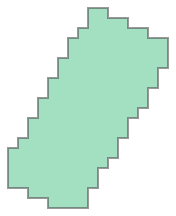

Often, datasets need to go through a series of data wrangling and transformation steps before they are ready for analysis or visualisation tasks. This lab will demonstrate several data wrangling and transformation operations for raster, vector, and tabular data.
We will start with a subset of the AgriFieldNet Competition Dataset (Radiant Earth Foundation and IDinsight, 2022) which has been published to encourage people to develop machine learning models that classify a field’s crop type from satellite images. This dataset consists of a series of directories with each directory corresponding to a 256 x 256 pixel image footprint. Inside each directory are the following files:
12 GeoTIFF files corresponding to spectral reflectance in different wavelengths from Sentinel-2 data.
1 GeoTIFF file with non-zero pixels corresponding to a crop type label.
1 GeoTIFF file with non-zero pixels corresponding to a field id.
1 JSON metadata file.
This data is subset from a larger dataset covering agricultural fields in four Indian states: Odisha, Uttar Pradesh, Bihar, and Rajasthan. The field boundaries and crop type labels were captured by data collectors from IDinsight’s Data on Demand team and the satellite image preparation was undertaken by the Radiant Earth Foundation.
Task
Our task is to combine all the raster data in a folder into a tabular dataset that can be used for machine learning tasks to predict a field’s crop type. Specifically, we will transform a collection of GeoTiff files into a tabular dataset with columns for each field id, crop type, and field average spectral reflectance values. We will also store geometry data representing the location of each field in a geometry column.
You will learn a range of common data transformation operations to wrangle datasets into a structure suitable for analysis and visualisation.
This lab will focus on transformation operations applied to tabular and vector data. This lab will cover:
attribute operations: data cleaning refresher (from week 3).
attribute operations: subsetting DataFrames based on conditions.
attribute operations: appending (concatenating) rows to tabular DataFrame objects.
attribute operations: group-by and summarise operations of tabular DataFrame objects.
attribute operations: key-based relational joins between two tables.
attribute operations: key-based relational joins between two tables.
spatial data operations: spatial joins of two GeoDataFrame objects.
Setup
Run the labs
You can run the labs locally on your machine or you can use cloud environments provided by Google Colab. If you’re working with Google Colab be aware that your sessions are temporary and you’ll need to take care to save, backup, and download your work.
Download data
If you need to download the data for this lab, run the following code snippet.
# Import modulesimport osimport pandas as pdimport geopandas as gpdimport plotly.express as pximport numpy as npimport matplotlib.pyplot as pltimport rasterioimport plotly.io as pioimport shapely.geometryimport pprintfrom rasterio import features# setup rendererif'google.colab'instr(get_ipython()): pio.renderers.default ="colab"else: pio.renderers.default ="jupyterlab"
Preliminary processing
This weeks self-guided lab will pick up from lab-4 where we’d created a program to:
read GeoTIFF files into NumPy ndarray objects
stack the ndarray objects to create a multiband raster representation of the data
reshape the multiband ndarray objects to a tabular-like structure
In this lab we will extend this program by converting the ndarray representation of a table to DataFrame object which we will further process with a range of tabular attribute and vector operations.
# path to dataimage_dir_path = os.path.join(os.getcwd(), "week-4", "images", "ref_agrifieldnet_competition_v1_source_0a664")# stacking bands # Sentinel-2 band names s2_bands = ['B01', 'B02', 'B03', 'B04', 'B05', 'B06', 'B07', 'B08', 'B8A', 'B09', 'B11', 'B12']# empty list to append ndarray of reflectance value for each band tobands = []# loop over each band, read in the data from the corresponding GeoTIFF file into an ndarrayfor b in s2_bands:print(f"reading {b}.tif") band_path = os.path.join(image_dir_path, b +".tif")with rasterio.open(band_path) as src:# append the ndarray storing the Sentinel-2 reflectance data for a band to a list bands.append(src.read(1))# stack all bands in the list to create a multiband rastermultiband_raster = np.stack(bands)# make NDVI bandred = multiband_raster[3,:,:].astype("float64")nir = multiband_raster[7,:,:].astype("float64")ndvi = (nir-red)/(nir+red)ndvi = np.expand_dims(ndvi, axis=0) # add a bands axismultiband_raster = np.concatenate((multiband_raster, ndvi), axis=0) # stack the ndvi band### HERE WE ARE STACKING THE FIELD ID BAND field_id_path = os.path.join(image_dir_path, "field/field_ids.tif")with rasterio.open(field_id_path) as src: field_ids = src.read().astype("float64") field_ids[field_ids ==0] = np.nan multiband_raster = np.concatenate((multiband_raster, field_ids), axis=0)## HERE WE ARE STACKING THE CROP TYPE LABELS BAND labels_path = os.path.join(image_dir_path, "label/raster_labels.tif")with rasterio.open(labels_path) as src: multiband_raster = np.concatenate((multiband_raster, src.read()), axis=0)# reshape multiband raster to tabular formatrows = multiband_raster.shape[1]cols = multiband_raster.shape[2]n_bands = multiband_raster.shape[0]reshaped = multiband_raster.reshape(n_bands, rows*cols)tabular = reshaped.T
As our data is now in a tabular structure it makes sense to convert it from a NumPy ndarray object to Pandas a DataFrame object. Pandas DataFrame objects, and the pandas package more generally, are based on NumPy but have been tailored for working with tabular datasets. For example, a NumPy ndarray stores data of the same type in an array-like structure (e.g. all elements are integers). A pandas DataFrame can store different type data in different columns (e.g. column 0 is string, column 1 is floating point, etc.), but the values within each column are the same type and each column is typically a PandasArray which is based on a NumPy ndarray.
Columns in a pandas DataFrame are called Series and a Series can be objects in your program independent of a DataFrame. A Series is an array-like sequence of values stored in a PandasArray which wraps a NumPy ndarray, and a DataFrame creates a tabular structure by combining one or more Series.
Operations on Pandas DataFrames also borrow from NumPy’s style such as avoiding for-loops; however, they also provide several features and functions geared towards working with tabular datasets. A selection of these features include:
indexing using column names
relational database style operations including key-based joins, conditional filtering and selection of data, and group-by and summarise
support for working with time-series
more tools for handling missing data
Thus, Pandas DataFrame objects are useful for many attribute data transorfmation operations.
To convert a NumPy ndarray to a Pandas DataFrame we pass the array into the DataFrame’s constructor function helpfully named DataFrame(). The constructor function expects the NumPy ndarray and a list of column labels as arguments.
Let’s quickly recap our data structures after we have performed several raster transformation operations on the GeoTIFF files. We have an ndarray object, tabular, which is a 2-Dimensional NumPy ndarray representing 256 x 256 pixel images in a tabular structure with pixels aligned down the rows (0-axis) and bands aligned along the columns (1-axis).
print(f"tabular is of type {type(tabular)}")print(f"tabular is an ndarray with shape {tabular.shape}")
tabular is of type <class 'numpy.ndarray'>
tabular is an ndarray with shape (65536, 15)
# convert ndarray to Pandas DataFrames2_bands = ['B01', 'B02', 'B03', 'B04','B05', 'B06', 'B07', 'B08','B8A', 'B09', 'B11', 'B12']# create a DataFrame object from the first element in tablestmp_df = pd.DataFrame(tabular, columns=s2_bands + ["ndvi", "field_id", "labels"])tmp_df.head()
B01
B02
B03
B04
B05
B06
B07
B08
B8A
B09
B11
B12
ndvi
field_id
labels
0
43.0
37.0
36.0
32.0
36.0
61.0
74.0
67.0
80.0
13.0
56.0
31.0
0.353535
NaN
0.0
1
43.0
37.0
36.0
32.0
36.0
61.0
74.0
68.0
80.0
13.0
56.0
31.0
0.360000
NaN
0.0
2
43.0
38.0
37.0
33.0
37.0
62.0
75.0
70.0
82.0
13.0
59.0
35.0
0.359223
NaN
0.0
3
43.0
37.0
37.0
34.0
37.0
62.0
75.0
70.0
82.0
13.0
59.0
35.0
0.346154
NaN
0.0
4
43.0
38.0
38.0
35.0
39.0
64.0
76.0
70.0
83.0
13.0
65.0
40.0
0.333333
NaN
0.0
Looking at the DataFrame we can clearly see some NaN values in the field_id column. As each row in this DataFrame represents a pixel in the image, rows with NaN values in the field_id column are pixels which don’t have a crop type label. Therefore, we can drop them using the dropna() method - this will drop all rows from the DataFrame where there is a NaN value.
Let’s inspect some metadata for the DataFrame we have created.
The DataFrame’s info() method returns a summary of the column’s data types, count of non-null data, and the memory usage for the object. We can see that the field_id and labels columns are float64; however, these columns are storing categorical data so integer numbers would be a more appropriate type. Therefore, we can use the astype() method to convert these columns to integer type.
Recap quiz
Can you use the dropna() and astype() methods to i) drop all rows with NaN values, and ii) convert the field_id and labels columns to int32 type? Use the pandas docs for example uses of the dropna() and astype() methods.
## ADD CODE HERE ##
answer
tmp_df = tmp_df.dropna()tmp_df = tmp_df.astype({"field_id": "int32", "labels": "int32"})# Check the cast to integer type has worked. # Also, note the reduced memory usage after dropping all the nan rowstmp_df.info()
Grouped summaries
Another common attribute operation when working with tabular data is performing grouped aggregations and summaries. For example, often we want to compute the mean, median, min, max, or sum of data values within groups in our dataset. This could be to generate summary tables for reporting purposes or an intermediate step in a data transformation workflow.
Our goal for this data transformation workflow is to generate average spectral reflectance values in different wavelengths from Sentinel-2 images for each field with a crop type label. So far we have created a table where each row represents one pixel in a 256 x 256 image footprint and we have many pixels per field. We need to compute the average reflectance values for each field. This is a group-by and summarise operation - grouping by field and summarising using the mean.
A group-by and summarise operation can be conceptualised as a sequence of split-apply-combine steps McKinney (2022):
Split your dataset into groups.
Apply a function to values in each group as a summary.
Combine the results of applying the function to each group.
For our dataset we need to group-by field_id and labels (crop type column) and compute the mean of spectral reflectance values within each group.
Pandas DataFrames have a groupby() method that can take in a list of one or more column names. Calling this method returns a GroupBy object that creates groups from your dataset for each of the unique values of the grouping columns and can be used to apply summary operations to each group.
# create a group using field id and crop typetmp_df_groups = tmp_df.groupby(["field_id", "labels"])print(tmp_df_groups)
<pandas.core.groupby.generic.DataFrameGroupBy object at 0x7f6bc8f335e0>
Finally, we need to apply our summary operations to each group. We can do this by calling a function on the GroupBy object. A useful function for data exploration tasks is calling size() which tells us the number of observations in each group.
By calling size() on the GroupBy object we can see that we have a group with a field_id of 81 and a crop type label of 1 (wheat). There are 70 observations in this group.
If we want to compute the mean of the spectral reflectance values within each group we can call mean() instead of size().
# mean spectral reflectance values per grouptmp_df_groups.mean()
B01
B02
B03
B04
B05
B06
B07
B08
B8A
B09
B11
B12
ndvi
field_id
labels
80
6
42.186441
37.389831
35.881356
32.949153
37.322034
58.847458
69.711864
64.728814
76.474576
12.000000
60.101695
35.830508
0.325059
81
1
43.000000
39.671429
38.771429
40.771429
43.242857
56.771429
65.700000
61.185714
72.800000
12.000000
72.971429
49.371429
0.200899
771
6
43.000000
38.555556
37.074074
36.777778
40.444444
56.518519
66.259259
61.518519
72.888889
12.074074
67.111111
43.296296
0.251846
772
6
42.000000
37.142857
35.428571
32.142857
36.714286
60.142857
72.285714
66.285714
79.142857
12.000000
58.285714
33.142857
0.346986
1009
4
43.500000
39.833333
39.000000
40.000000
43.666667
59.833333
69.833333
64.500000
76.500000
12.166667
73.166667
50.000000
0.234912
1054
2
42.000000
36.883721
35.139535
31.720930
36.953488
59.674419
71.023256
66.116279
78.093023
12.255814
59.767442
34.581395
0.351325
1316
6
42.417143
37.691429
36.451429
34.285714
38.994286
60.651429
71.891429
66.817143
79.074286
12.840000
65.982857
40.862857
0.321599
1481
2
43.666667
39.000000
37.686275
38.549020
41.941176
54.960784
63.568627
59.274510
70.627451
12.000000
72.137255
48.196078
0.211922
1482
4
42.000000
37.176471
35.176471
32.411765
36.882353
56.705882
66.176471
60.647059
72.235294
12.000000
54.764706
32.470588
0.302352
We’re now in a position to update our data transformation routine to include converting the ndarray object in a tabular-like structure to Pandas DataFrames, data cleaning to drop NaN pixels, and computing the mean spectral reflectance values for each field_id and crop type label combination.
# path to dataimage_dir_path = os.path.join(os.getcwd(), "week-4", "images", "ref_agrifieldnet_competition_v1_source_0a664")# stacking bands # Sentinel-2 band names s2_bands = ['B01', 'B02', 'B03', 'B04', 'B05', 'B06', 'B07', 'B08', 'B8A', 'B09', 'B11', 'B12']# empty list to append ndarray of reflectance value for each band tobands = []# loop over each band, read in the data from the corresponding GeoTIFF file into an ndarrayfor b in s2_bands:print(f"reading {b}.tif") band_path = os.path.join(image_dir_path, b +".tif")with rasterio.open(band_path) as src:# append the ndarray storing the Sentinel-2 reflectance data for a band to a list bands.append(src.read(1))# stack all bands in the list to create a multiband rastermultiband_raster = np.stack(bands)# make NDVI bandred = multiband_raster[3,:,:].astype("float64")nir = multiband_raster[7,:,:].astype("float64")ndvi = (nir-red)/(nir+red)ndvi = np.expand_dims(ndvi, axis=0) # add a bands axismultiband_raster = np.concatenate((multiband_raster, ndvi), axis=0) # stack the ndvi band### HERE WE ARE STACKING THE FIELD ID BAND field_id_path = os.path.join(image_dir_path, "field/field_ids.tif")with rasterio.open(field_id_path) as src: field_ids = src.read().astype("float64") field_ids[field_ids ==0] = np.nan multiband_raster = np.concatenate((multiband_raster, field_ids), axis=0)## HERE WE ARE STACKING THE CROP TYPE LABELS BAND labels_path = os.path.join(image_dir_path, "label/raster_labels.tif")with rasterio.open(labels_path) as src: multiband_raster = np.concatenate((multiband_raster, src.read()), axis=0)# reshape multiband raster to tabular formatrows = multiband_raster.shape[1]cols = multiband_raster.shape[2]n_bands = multiband_raster.shape[0]reshaped = multiband_raster.reshape(n_bands, rows*cols)tabular = reshaped.T### HERE WE CONVERT TO DATAFRAMES AND DROP NAN VALUEStmp_df = pd.DataFrame(tabular, columns=s2_bands + ["ndvi", "field_id", "labels"])dfs = tmp_df.dropna()dfs = dfs.astype({"field_id": "int32", "labels": "int32"})dfs = dfs.groupby(["field_id", "labels"]).mean().reset_index()
Let’s quickly inspect the output. We should have one row per field_id and crop type label group. The DataFrame storing the results of this routine are referenced by the variable dfs.
dfs
field_id
labels
B01
B02
B03
B04
B05
B06
B07
B08
B8A
B09
B11
B12
ndvi
0
80
6
42.186441
37.389831
35.881356
32.949153
37.322034
58.847458
69.711864
64.728814
76.474576
12.000000
60.101695
35.830508
0.325059
1
81
1
43.000000
39.671429
38.771429
40.771429
43.242857
56.771429
65.700000
61.185714
72.800000
12.000000
72.971429
49.371429
0.200899
2
771
6
43.000000
38.555556
37.074074
36.777778
40.444444
56.518519
66.259259
61.518519
72.888889
12.074074
67.111111
43.296296
0.251846
3
772
6
42.000000
37.142857
35.428571
32.142857
36.714286
60.142857
72.285714
66.285714
79.142857
12.000000
58.285714
33.142857
0.346986
4
1009
4
43.500000
39.833333
39.000000
40.000000
43.666667
59.833333
69.833333
64.500000
76.500000
12.166667
73.166667
50.000000
0.234912
5
1054
2
42.000000
36.883721
35.139535
31.720930
36.953488
59.674419
71.023256
66.116279
78.093023
12.255814
59.767442
34.581395
0.351325
6
1316
6
42.417143
37.691429
36.451429
34.285714
38.994286
60.651429
71.891429
66.817143
79.074286
12.840000
65.982857
40.862857
0.321599
7
1481
2
43.666667
39.000000
37.686275
38.549020
41.941176
54.960784
63.568627
59.274510
70.627451
12.000000
72.137255
48.196078
0.211922
8
1482
4
42.000000
37.176471
35.176471
32.411765
36.882353
56.705882
66.176471
60.647059
72.235294
12.000000
54.764706
32.470588
0.302352
Raster-vector operations and vector operations
We’re almost at the stage where we’ve processed a number of GeoTIFF files stored across many directories into a tabular dataset in a DataFrame object ready for machine learning. However, there are two more columns we need to create and append to the DataFrame. The first is a geometry column recording the centroid of each field. This allows us to keep a record of each field’s geographic location. We’ll also use this centroid to identify the district (an administrative boundary below the State-level in India) each field is located in.
To compute the centroid for each field we need to perform some raster-vector operations where each raster dataset is converted to a vector dataset. This is called vectorisation and can be achieved using rasterio’s shapes() function which returns the shape and value of connected regions in a raster dataset. Pixels belonging the same field in a raster layer should be connected (i.e. their edges touch) and they should have the same value (field id). Thus, applying the shapes() function to the raster layer of field ids should return vector polygons for each field outline.
To do this we’ll need to use the field_ids.tif file. Let’s quickly inspect this files again.
field_id_path = os.path.join(image_dir_path, "field/field_ids.tif")with rasterio.open(field_id_path) as src:print(f"Printing metadata for field_ids.tif") pprint.pprint(src.meta)print("")
We have printed a dictionary object of metadata for the field_ids.tif file.
Let’s look at what the shapes() function returns for field_ids.tif.
The shapes() function takes in a NumPy ndarray of raster values (generated by src.read() which reads the raster values from the GeoTIFF file into a NumPy ndarray in memory) and returns a generator object which generates a tuple for each shape in the raster data. The first element of the tuple is a dictionary object of coordinates and the type of geometry (e.g. point, line, polygon). The second element of the tuple is the attribute value that corresponds to the geometry. We can convert the generator into a list of tuples.
field_id_path = os.path.join(image_dir_path, "field/field_ids.tif")with rasterio.open(field_id_path) as src:# shapes is a generator shapes = features.shapes(src.read(), transform=src.transform)# list of geometry and shape value field_shapes =list(shapes)# pretty print the first two elements of field_shapes pprint.pprint(field_shapes[0:2])
At this stage, we’ve converted our raster data to a list of numbers representing coordinates for the shape. We now need to turn this list of coordinates into a geometry object. In Python, geometries are represented as ShapelyGeometry objects. The geometry column in a GeoPandas GeoDataFrame is a Series of Shapely Geometry objects.
To create a ShapelyGeometry object we extract the list of coordinates and pass them into the shapely.geometry.shape() function.
Printing geom should return a list of Shapely Geometry objects.
field_id_path = os.path.join(image_dir_path, "field/field_ids.tif")with rasterio.open(field_id_path) as src:# shapes is a generator shapes = features.shapes(src.read(), transform=src.transform)# list of geometry and shape value field_shapes =list(shapes)# create a list of Shapely Geometry objects geom = []for s in field_shapes: geom.append(shapely.geometry.shape(s[0]))print(geom)
[<shapely.geometry.polygon.Polygon object at 0x7f6fc5216b60>, <shapely.geometry.polygon.Polygon object at 0x7f6fc5217e50>, <shapely.geometry.polygon.Polygon object at 0x7f6fc5216920>, <shapely.geometry.polygon.Polygon object at 0x7f6fc5217280>, <shapely.geometry.polygon.Polygon object at 0x7f6fc52178e0>, <shapely.geometry.polygon.Polygon object at 0x7f6f56b5cb50>, <shapely.geometry.polygon.Polygon object at 0x7f6f56b5f820>, <shapely.geometry.polygon.Polygon object at 0x7f6f56b5e830>, <shapely.geometry.polygon.Polygon object at 0x7f6f56b5f520>, <shapely.geometry.polygon.Polygon object at 0x7f6f56b5c100>]
We can also plot an element of geom to show it is a Shapely Geometry object.
geom[0]

geom[1]
Recap quiz
What object are we creating with []?
An empty list object.
What type of object is geom and what elements does it store?
It is a list object which is storing a list of Shapely Geometry objects.
Next, we compute the centroid for the polygon shape of the field. Computing a centroid is a geometry operation where the shape’s geometry is converted from a polygon to a point feature. To efficiently compute the centroid for the shapes returned by shapes() we can convert the list of Geometry objects to a GeoSeries and then use the GeoSeriescentroid attribute to return a GeoSeries of centroids.
Inspecting this GeoSeries should reveal a sequence of point Geometry objects have been computed. This GeoSeries object is now referenced by geom.
field_id_path = os.path.join(image_dir_path, "field/field_ids.tif")with rasterio.open(field_id_path) as src:# shapes is a generator shapes = features.shapes(src.read(), transform=src.transform)# list of geometry and shape value field_shapes =list(shapes)# create a list of Shapely Geometry objects geom = []for s in field_shapes: geom.append(shapely.geometry.shape(s[0]))# compute centroids geom = gpd.GeoSeries(geom, crs=src.crs).centroidprint(geom)
0 POINT (625348.886 3010277.629)
1 POINT (625432.143 3010093.571)
2 POINT (624427.353 3010055.588)
3 POINT (624406.860 3010018.721)
4 POINT (623445.678 3009850.593)
5 POINT (625380.000 3009830.000)
6 POINT (623763.857 3009644.143)
7 POINT (623465.980 3009577.157)
8 POINT (625155.370 3009447.222)
9 POINT (624157.525 3009275.277)
dtype: geometry
Now we have computed the centroid for each field, we can convert the points to a common coordinate reference system (EPSG:4326) using GeoPandas to_crs() method. We convert the points to a new coordinate system, EPSG:4326 which uses latitude and longitude values, to be able to perform vector operations using two vector datasets in future tasks (it is important that vector datasets have the same coordinate reference system to get correct and intended results).
field_id_path = os.path.join(image_dir_path, "field/field_ids.tif")with rasterio.open(field_id_path) as src:# shapes is a generator shapes = features.shapes(src.read(), transform=src.transform)# list of geometry and shape value field_shapes =list(shapes)# create a list of Shapely Geometry objects geom = []for s in field_shapes: geom.append(shapely.geometry.shape(s[0]))# compute centroids geom = gpd.GeoSeries(geom, crs=src.crs).centroid# reproject to EPSG 4326 geom = geom.to_crs("EPSG:4326")
If we look at the object returned by the features.shapes(), it’s a tuple with coordinates for connected raster pixels with the same value in the first element and the second element is the value of those raster pixels.
This is a challenging quiz question, have a go at each of the steps and follow the pointers to previous code snippets or docs before reviewing the answer.
1. We need create another Series of field ids using the value of raster pixels corresponding to the coordinates in a tuple. We can do this by looping over field_shapes (the list of tuples) and accessing the element at index position one in the tuple.Have a look at how we looped over field_shapes and accessed the coordinates at index position 0 in s and appended the object to the list geom. Use this logic as a template for how you could access the value in index position 1 and append it to a list.
2. Once you have created this Series, you should set its type to int32 using the astype() method.These are the docs for astype().
3. Then we need to combine the Series of field ids with the GeoSeries of field centroids in a GeoDataFrame. You can do this using the GeoDataFrame() constructor function: field_id_df = gpd.GeoDataFrame({'field_id': field_ids, 'geometry': geom}) (field_ids is a Series of field id values and geom is a GeoSeries of points.
4. Finally, we need to drop rows in the GeoDataFrame with 0 values in the field_id column as these shapes don’t have a crop type label.You can use the loc[] method for this and refer back to the Subsetting pandas DataFrames section from the self-guided lab in week 3.
field_id_path = os.path.join(image_dir_path, "field/field_ids.tif")with rasterio.open(field_id_path) as src:# shapes is a generator shapes = features.shapes(src.read(), transform=src.transform)# list of geometry and shape value field_shapes =list(shapes)# create a list of Shapely Geometry objects geom = []for s in field_shapes: geom.append(shapely.geometry.shape(s[0]))# compute centroids geom = gpd.GeoSeries(geom, crs=src.crs).centroid# reproject to EPSG 4326 geom = geom.to_crs("EPSG:4326")## ADD CODE HERE ##
answer
field_id_path = os.path.join(image_dir_path, "field/field_ids.tif")with rasterio.open(field_id_path) as src:# shapes is a generator shapes = features.shapes(src.read(), transform=src.transform)# list of geometry and shape value field_shapes =list(shapes)# create a list of Shapely Geometry objects geom = []for s in field_shapes: geom.append(shapely.geometry.shape(s[0]))# compute centroids geom = gpd.GeoSeries(geom, crs=src.crs).centroid# reproject to EPSG 4326 geom = geom.to_crs("EPSG:4326")# create a Series of field ids field_ids = []for f in field_shapes: field_ids.append(f[1]) field_ids = pd.Series(field_ids).astype("int32")# Combine the Series and GeoSeries into a DataFrame field_id_df = gpd.GeoDataFrame({'field_id': field_ids, 'geometry': geom})# drop shapes with value 0 field_id_df = field_id_df.loc[field_id_df["field_id"] >0, :]print(field_id_df)
If you’ve successfully completed the recap quiz, you should have a variable field_id_df that references a GeoDataFrame with a column of field_id values and a geometry column of field centroids.
field_id_df
field_id
geometry
0
1316
POINT (82.26570 27.20954)
1
772
POINT (82.26652 27.20787)
2
1482
POINT (82.25637 27.20762)
3
1054
POINT (82.25616 27.20729)
4
80
POINT (82.24644 27.20586)
5
1009
POINT (82.26597 27.20550)
6
81
POINT (82.24963 27.20397)
7
1481
POINT (82.24662 27.20339)
8
771
POINT (82.26366 27.20207)
Joins
Key-based joins
We now have two separate data objects in our Python program. We have a DataFrame storing average spectral reflectance values for each field, field id, and crop type label attributes (this is referenced by the variable dfs). We also have a GeoDataFrame storing the field id attribute and the field centroid as a point Geometry (this is referenced by the variable field_id_df).
When two tables have a matching column(s) we can use join operations to combine them. Rows in both tables are matched using common values in the matching column(s) and the joined table has columns from both tables.
Joining tables is a common operation in relational databases using SQL and the same operations can be implemented in Pandas using merge() functions.
Some important concepts for join operations:
The columns with values used to match rows are called keys.
one-to-one joins are where there is exactly one match between rows in the two tables being joined.
many-to-one joins are where a row in one table can match one or more rows in another table.
left joins keep all rows in the left table and only matching rows in the right table.
inner joins keep only matching rows in the left and right tables.
The Pandas merge() docs and McKinney (2022) provide useful explanations for how join operations work.
Let’s use consider these concepts in the context of joining our DataFramedfs storing average spectral reflectance values and crop type labels and our GeoDataFramefield_id_df which stores the field centroids.
The matching column in both tables is field_id. This the joining key.
We are joining the two tables on field_id which should be unique to each field. Therefore, we are implementing a one-to-one join.
As we’re using the field centroids for subsequent operations, we only want to keep fields that have a centroid value. Therefore, we’ll use an inner join.
Pandas merge() function expects the following arguments:
left - left table in the join.
right - right table in the join.
how - whether to use a left or inner join.
left_on - columns in left table to use as keys.
right_on - columns in the right table to use as keys.
Recap quiz
Can you use the merge() function to perform an inner join using the field_id column combining dfs and field_id_df? If the join is successful you should see a geometry column appended to the columns in dfs. Assign the result of this merge() to the variable joined_df.
## ADD CODE HERE ##
answer
joined_df = pd.merge(left=dfs, right=field_id_df, how="inner", left_on=["field_id"], right_on=["field_id"])# display on the first few rowsjoined_df.head()
# convert joined_df to GeoDataFramejoined_df = gpd.GeoDataFrame(joined_df, geometry=joined_df.geometry, crs="EPSG:4326")type(joined_df)
geopandas.geodataframe.GeoDataFrame
Spatial Joins
Spatial join operations join the attributes of two vector layers based on their relationship in space. For example, if we have a GeoDataFrame storing field boundaries (polygon geometries) and field attributes and another GeoDataFrame storing shire boundaries (polygon geometries) and a shire name as an attribute, we can join the the two tables based on the largest intersection (overlap) between field boundaries and shire boundaries. If the field boundaries GeoDataFrame was the left table in the spatial join, for each row (or geometry feature) the shire name from the shire with largest intersection would be joined to that table in a new column.
GeoPandas provides an sjoin() function that can be used for spatial joins of two GeoDataFrames. The sjoin() function expects the following as arguments:
left_df - left GeoDataFrame in the spatial join.
right_df - right GeoDataFrame in the spatial join - columns from the right_df will be joined to left_df.
how - whether to use a left, inner, or right join.
predicate - a binary predicate that defines the spatial relationship between features in right_df and left_df.
Binary predicates that can be used are:
intersects
contains
crosses
within
touches
overlaps
Intersects is the default predicate for spatial joins in GeoPandas.
To complete our data transformation routine we need to add a column to joined_df that stores the District that the field is located in. We can do this using a spatial join based on the intersect of the field’s centroid (point geometry) and the shape of the District (polygon geometry).
But, we need to read in District geometries for India obtained from geoBoundaries.
That looks like India. Let’s implement our final data transformation step and perform a spatial join to add a District column to joined_df.
Recap quiz
Use the GeoPandas docs to implement a spatial join with the sjoin() function that joins india_districts (as right_df) to joined_df (as left_df) using an inner join and intersects predicate. Assign the result to the variable joined_df_district.
Finally, let’s write our processed data ready for training and testing a machine learning model to file.
Recap quiz
Can you save the data referenced by joined_df_district to a GeoJSON file on disk? Save the data with the filename processed_data.geojson at the path created by os.path.join(os.getcwd(), "week-4", "processed_data.geojson").
## ADD CODE HERE ##
answer
# save fileout_path = os.path.join(os.getcwd(), "week-4", "processed_data.geojson")joined_df_district.to_file(out_path)